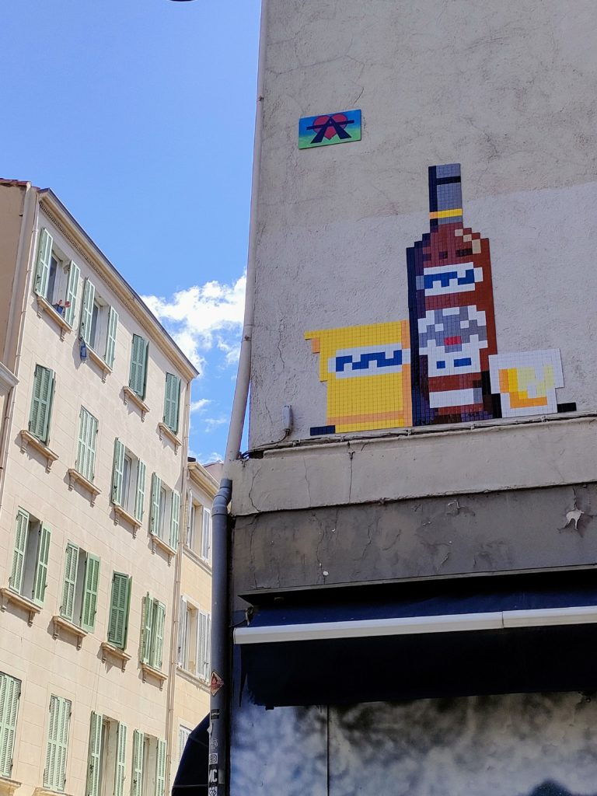
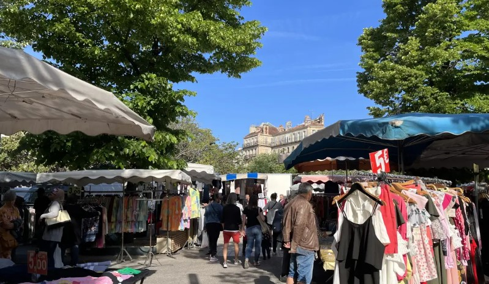
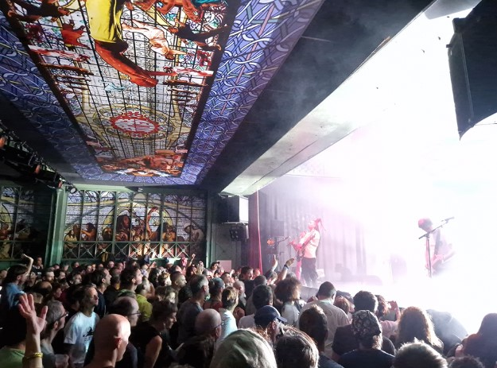
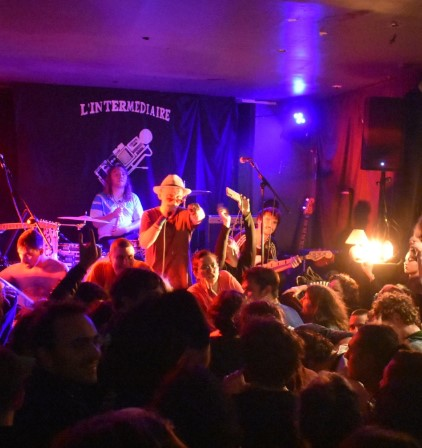
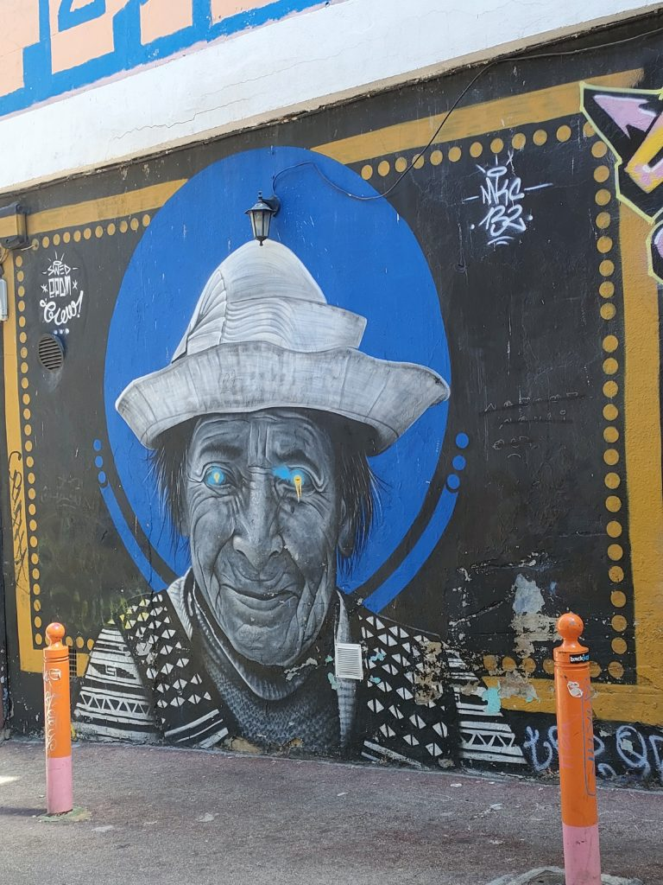
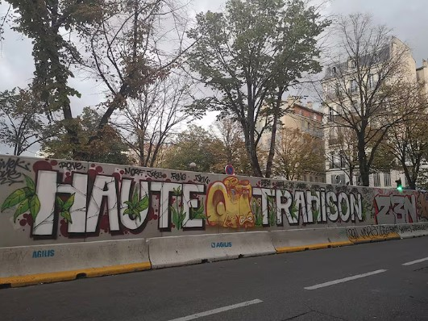
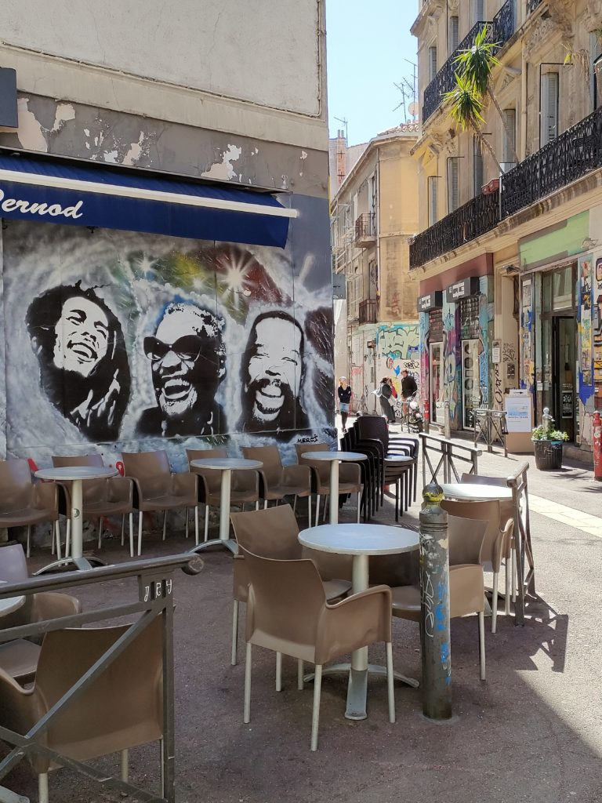
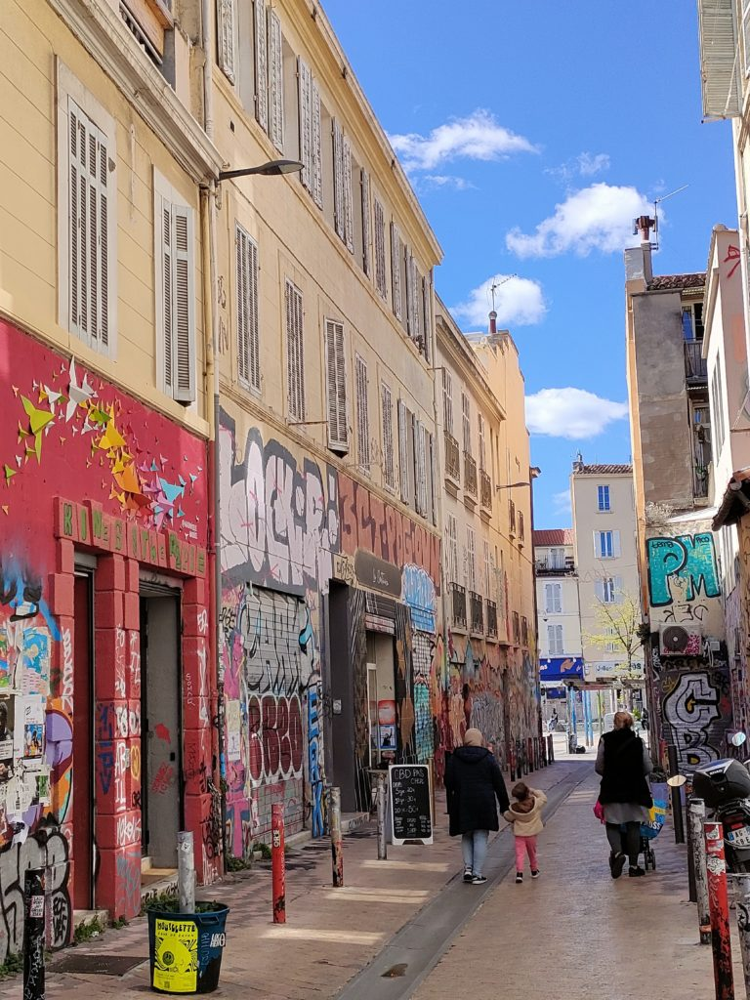

Il y a des quartiers qui existent sur les cartes, et d'autres qui existent dans la mémoire des gens. Le Cours Julien, La Plaine, Notre-Dame-du-Mont — appelons-le comme on veut, il déborde toujours de ses contours officiels. C'est un triangle de rues entre le bas de la Canebière et les pentes du Camas, un périmètre de quelques centaines de mètres où se croisent, depuis des décennies, des vies qui n'auraient pas forcément dû se croiser.
Quartier populaire d'abord. Quartier de maraîchers, d'artisans, d'immigrés du siècle dernier qui ont planté leurs habitudes dans les cafés et les cours intérieures. Puis quartier de contre-culture, dans les années 80 et 90, quand les loyers bon marché et les entrepôts vides ont attiré les artistes, les associations, les fanzines, les soundsystems. Et maintenant — lentement, sûrement — quartier convoité, quartier en train de muer, quartier dont certains habitants regardent les changements avec une inquiétude légitime.
Cette page n'est pas un guide touristique. C'est une tentative de ne pas oublier d'où ça vient.
Le Cours Julien tire son nom d'un ancien marché maraîcher qui s'étendait là où se trouve aujourd'hui l'esplanade. Les jardins potagers ont laissé place, au fil des démolitions et des reconstructions du XIXe et du XXe siècle, à un quartier dense, hétéroclite, construit sans grand plan directeur. C'est peut-être pour ça qu'il a gardé cette texture particulière — des rues qui ne se recoupent pas toujours à angle droit, des immeubles qui semblent avoir été posés là un peu par hasard, des caves qui deviennent des salles de concert.
La place Jean-Jaurès — que tout le monde appelle « La Plaine » — a longtemps été le cœur battant du quartier populaire. Marché trois fois par semaine, terrasses qui s'étendent sur le bitume, vieux qui jouent à la pétanque, gamins qui traînent. Une place à l'ancienne, fonctionnelle, usée, vivante précisément parce qu'elle n'était pas belle.

Le marché de La Plaine, place Jean-Jaurès
En 1984, une ancienne halle maraîchère est reconvertie en salle de spectacles. Ce sera l'Espace Julien — une Maison pour tous qui va progressivement devenir l'une des scènes de musiques actuelles les plus importantes du sud de la France. Pas à coups de millions d'euros d'architectes ou de grandes politiques culturelles, mais par la volonté obstinée de gens qui aimaient la musique et le partage.
En quarante ans, la salle a vu passer Chet Baker et Stan Getz dans ses premières années jazz, puis La Mano Negra, Paco de Lucia, Archie Shepp, Arthur H, Zazie, Kid Francescoli. Des légendes et des débutants. Des tournées internationales et des premiers concerts d'artistes locaux qui seraient, quelques années plus tard, dans des Zéniths. L'Espace Julien avait ce don rare : faire coexister les deux sans que ça sonne faux.
« Une petite salle de quartier qui s'est peu à peu muée en une institution culturelle où de grands artistes des musiques actuelles et de l'humour ont laissé leur empreinte. Une histoire à petite échelle qui porte en elle celle de toute une génération. »
En 2023, après 39 ans et quelque 8 000 spectacles, l'Espace Julien change de main. L'association La Responsabilité des Rêves — née du rapprochement entre Le Makeda, Le Théâtre de l'Œuvre, La Meson et l'Espace Julien — reprend les clés. La salle rouvre le 22 septembre, avec de nouvelles couleurs et la même ambition. L'histoire continue.
En 2024, les éditions Parenthèses publient Espace Julien, une aventure musicale à Marseille (Patrick Coulomb, Marie-Hélène Balivet), un livre qui retrace ces quatre décennies à travers des photos de scène, des affiches, des témoignages d'artistes. Un beau livre sur un lieu improbable qui a changé la vie culturelle d'une ville.


Le Cours Julien est depuis les années 90 l'un des hauts lieux du street art à Marseille — et l'un des rares endroits en France où les murs ont été officiellement mis à disposition des artistes sans que ça devienne un musée en plein air aseptisé. Les œuvres changent, se superposent, dialoguent ou s'effacent. Certaines tiennent des années, d'autres sont recouvertes en quelques semaines.
C'est une forme d'écriture collective et éphémère. Les murs du quartier racontent la ville telle que ses habitants la voient.

Street art, Cours Julien
En 2016, la mairie de Marseille annonce un projet de « requalification urbaine » de la place Jean-Jaurès. Requalification — le mot est doux, presque neutre. Ce qu'il recouvre l'est moins : le réaménagement complet d'une place populaire, la modification de son marché, la transformation de ses usages. Une partie des habitants perçoit immédiatement ce que ça signifie concrètement : la disparition programmée de ce qui faisait la vie du quartier, au profit d'un espace plus propre, plus lisse, plus attractif pour une clientèle différente.
Pendant trois ans, le quartier résiste. Des assemblées générales, des occupations, des manifestations, des négociations qui n'aboutissent à rien. Une mobilisation longue, épuisante, portée par des gens qui avaient d'autres choses à faire mais qui tenaient à leur place, à leur marché, à leur façon d'habiter la ville.
« Marseille, février 2019, La Plaine est encerclée par un mur de 2m50 de haut pour assurer le bon déroulé des travaux et enferme le rêve d'un quartier fait par ses habitants. »
En février 2019, la mairie fait ériger en une nuit un mur de béton de 2m50 de hauteur tout autour de la place. Une décision sidérante dans sa brutalité — le genre de geste qui dit tout ce qu'il y a à savoir sur la relation entre une institution et ses administrés quand le dialogue a échoué. Le marché est interrompu. La place disparaît derrière le béton. Le quartier vit avec cette cicatrice pendant des mois.
Cette histoire a été filmée. La Bataille de la Plaine, réalisé par Sandra Ach, Nicolas Burlaud et Thomas Hakenholz pour le collectif Primitivi, est un documentaire tourné entre 2016 et 2020 qui suit cette lutte de l'intérieur. Ce n'est pas seulement un film sur un réaménagement urbain — c'est un film sur la mémoire, sur ce qui se perd quand une ville décide de changer de visage, et sur ce que les gens font pour ne pas laisser disparaître ce qui leur appartient.

Le mur de 2m50 autour de la place Jean-Jaurès, février 2019
La place a rouvert. Les travaux sont finis. Le marché est revenu, mais pas tout à fait le même. Des terrasses neuves, du mobilier urbain récent, un sol refait. Certains disent que c'est mieux. D'autres disent qu'il manque quelque chose — cette rugosité, cet inconfort, cette liberté d'usage qui faisait que la place appartenait à tout le monde parce qu'elle n'était belle pour personne en particulier.
Le processus en cours dans ce quartier n'est pas différent de ce qui se passe dans des dizaines de quartiers populaires en France et en Europe. Les loyers montent. Les commerces de proximité ferment, remplacés par des coffee shops et des restaurants qui ciblent une clientèle différente. Les familles qui étaient là depuis des générations partent, faute de pouvoir payer. De nouveaux habitants arrivent — pas nécessairement mauvais, pas nécessairement conscients de ce qu'ils participent à effacer.
C'est la gentrification : un processus structurel, lent, sans méchant clairement identifiable, et pourtant d'une violence sociale réelle. Le Cours Julien n'y échappe pas. Il en est même, pour Marseille, l'un des symboles les plus visibles.


Ce site recense les lieux du quartier tels qu'ils existent aujourd'hui. Bars, salles de concerts, galeries, librairies, restaurants — des endroits tenus par des gens qui ont choisi d'être là, qui participent à cette vie de quartier, et qui sont eux-mêmes pris dans les mêmes tensions. Ce n'est pas un catalogue figé. C'est un instantané, et il changera.